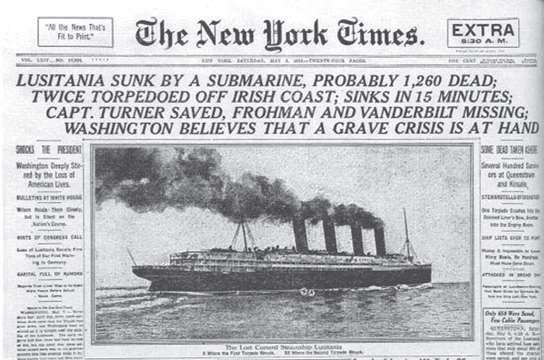
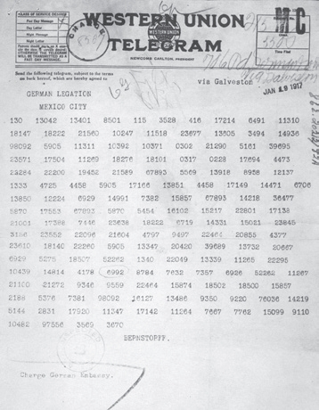
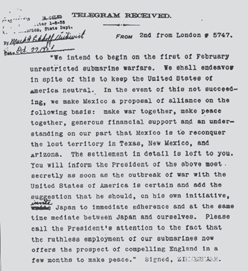
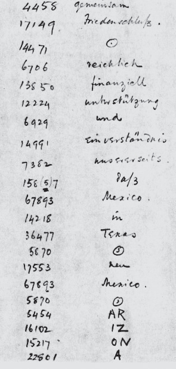

密码学是应用数学的一个领域。在应用数学中，基本理论简洁明了，但应用效果却很模糊，两者形成了鲜明对比。毕竟，有时信息传递安全与否决定着整个国家的命运。密码学改变历史进程的事件比比皆是，发生于20世纪的齐默尔曼电报事件就是最引人注目的例子之一。
在大半个欧洲都被卷入的血腥的第一次世界大战之中，1915年5月7日，一艘德国U型潜艇发射鱼雷袭击了横跨大西洋的客轮“路西塔尼亚号”，当时这艘插着英国国旗的客轮正航行在爱尔兰海岸附近。这是历史上最臭名昭著的屠杀之一，1 198名平民因此而丧生，其中124人是美国籍。新闻不胫而走，在美国激起了民愤，时任美国总统伍德罗·威尔逊向德国方面发出警告，如果德方再有此类行径，美方会立即加入协约国阵营，向德国宣战。另外，威尔逊总统要求德国潜艇浮出水面，不再发动任何攻击，防止再次发生民用船只被击沉事件。于是，德国U型潜艇的战略优势因此项让步威势大减。

《纽约时报》对“路西塔尼亚号”沉没事件的报道。
亚瑟·齐默尔曼（Arthur Zimmermann）在外交界的声誉很高，1916年11月，德国政府委任他为新一任外交部长。美国新闻界对此表示赞许，认为齐默尔曼的上任对德美两国关系而言是好兆头。
1917年1月，距离“路西塔尼亚号”悲剧还不到两年，在战争的高潮时，德国驻美国大使约翰·冯·伯恩斯托夫（Johann von Bernstorf）收到一封来自齐默尔曼的加密电报，指示大使将此电报秘密交给德国驻墨西哥大使海因里希·冯·埃卡特（Heinrich von Eckardt），内容为：
我方欲于2月1日发动无限制潜艇战，务必尽一切努力使美国保持中立。
一旦形势有变，我方将寻求与墨西哥结盟，以如下条件为基础：一同开战，一同求和，经济上倾囊相助，以及我方对墨西哥意欲收复得克萨斯州、新墨西哥州和亚利桑那州失地诉求的理解。协议细节由你（冯·埃卡特）确定。
一旦与美国开战，请尽快以绝密形式将上述内容告知墨西哥总统，并建议他主动邀请日本追随我方，同时担任日方与我方的中间人。
可告知墨总统，我方已经做好充足准备，随时可进行无限制潜艇战，有望迫使英国在几个月内求和。
可想而知，如果这篇电报被公布于众，德国和美国必定爆发战争。虽然德国皇帝威廉二世清楚潜艇在水下发动攻击就等于向美方宣战，但他希望英国迅速投降，美国也就没什么战争可参与了。此外，如果墨西哥对美国南部边界造成威胁，势必也能阻止美国参与远方的战争。但是，墨西哥需要一定的时间组织自己的军事力量。因此，保密时长是关键，德国的目的是尽量延长保密时间，保证潜艇战能够按照德方的意愿扭转战局。
然而，英国政府有别的计划，战争开始后不久，英国政府就切断了德国直通西半球的海底通信电缆。这样一来，英国就能截获所有通过电缆传输的通信。另一方面，美国有意通过协商终止战争，所以一直允许德方继续传递外交信息，向德国驻华盛顿大使馆保证其能够不受干扰地收到德国发来的信息。
英国政府截获这份加密电报后，把信息发给了密码分析部门，这个部门就是40号房间。
德方使用的是外交部的一般加密算法，还使用了一个叫作0075的密码，而40号房间之前已经在一定程度上将其破解。这种加密算法包括替换单词（编码）和字母（加密），类似于德国当时使用的另外一个加密工具ADFGVX密码，稍后我们会做详细介绍。
破解这份电报没有花费多长时间，但英方在要不要立即告知美方的问题上犹豫不决。原因有二：首先，美方有承诺在先，德国与驻美使馆间的通信受到外交庇护，英方告知美方这一消息也就意味着暴露了英方无视美方对德方的承诺；其次，如果将电报公布于众，德国政府会立即意识到其诸多密码已经被破解，随后会更改加密系统。最终，英国采取了一个折中的办法，决定告知美国截获并解密的电报是德国驻美大使发给驻墨西哥大使的那份，保全了美方的外交声誉，也以此让德方认为电报是在墨西哥被截获并解密的。


德国驻华盛顿大使约翰·冯·伯恩斯托夫将齐默尔曼的电报（上）译解后（下），传给驻墨西哥大使。

英国译解的齐默尔曼电报（部分）。从中可以看出，德方对单词“Arizona”（亚利桑那）没有使用代码，而是将一个词分成了AR、IZ、ON和A。
2月底，美国威尔逊政府将电报内容泄露给新闻界。起初，一些媒体对此持怀疑态度，尤其是赫斯特报团旗下持反战观点，同情德国的报纸。然而，3月中旬，齐默尔曼公开承认发过这份颇有争议的电报。两周后，即1917年4月6日，美国国会决议向德国宣战，这个决定对欧洲和整个世界来说都产生了深远的影响。
虽然在当时轰动一时，但在密码学扮演关键角色的历史上，齐默尔曼电报事件只是诸多里程碑中的一个，本书还有很多散布在历史长河和各种文化当中的其他事例。虽如此说，但有一点我们非常清楚，很多至关重要的历史事件必定至今还无人知晓，因为就其实质而言，密码学的历史是一个秘密的历史。